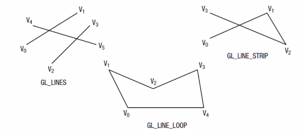
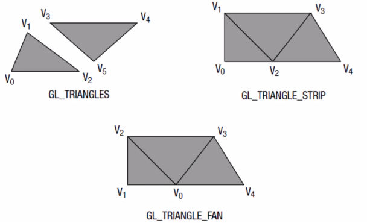
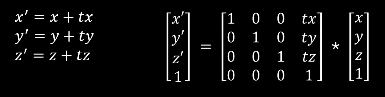
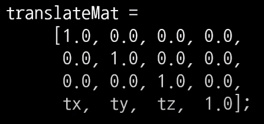
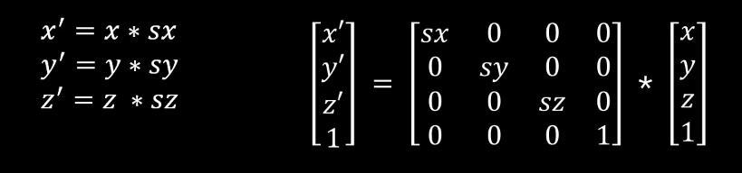
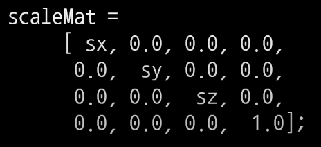
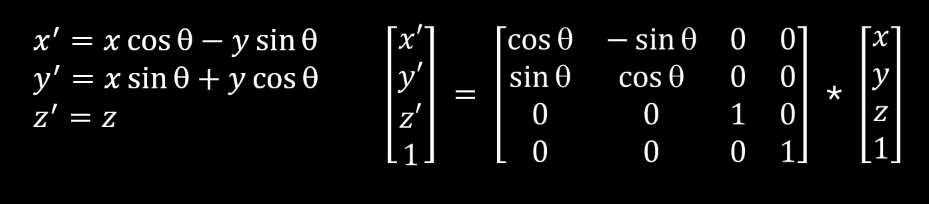
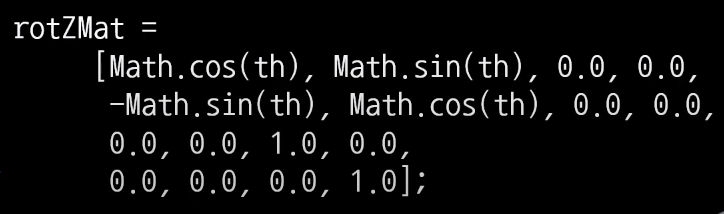
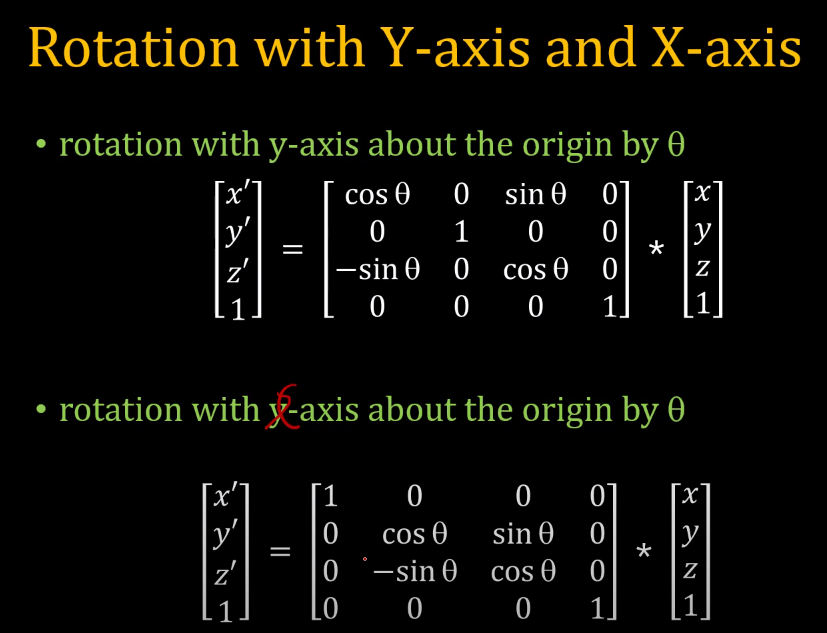

우리는 이 WebGL_Tutorial 페이지를 통해 2D 도형과 3D 도형의 표현, 그리고 도형의 변환을 배울 예정이다.
Primitives와 Transformation
WebGL에선 point, line, triangle로 모든 도형을 표현해야 한다. 이를 primitives라고 하고 "gl.drawArrays"함수나 "gl.drawElements"함수를 통해 그릴 수 있다.
우리는 여기서 drawArrays함수와 drawElements함수의 mode 변화에 따른 도형의 모습과 translate, scale 연산 결과를 확인해볼 수 있다. 캔버스를 클릭하여 좌표를 추가하고 translate, scale연산을 실행해보자!
translate :
x축 :
y축 :
scale :
Mode
mode를 통해 point, line, triangle을 어떤 식으로 그릴지 선택할 수 있다.


Translate
이러한 translate, rotate, scale과 같은 transformation은 Homogeneous coordinate를 활용해 행렬의 곱으로 표현할 수 있다.
좌표를 x축으로 tx만큼, y축으로 ty만큼, z축으로 tz만큼 이동시키는 transformation 행렬은 다음과 같다.

이때, transformation 행렬은 column major order를 따라야 하기 때문에 다음과 같이 사용해야한다.

Scale
각 축을 확대하거나 축소시키는 scale 행렬은 다음과 같다.

이때도 마찬가지로 column major order를 따라 다음과 같이 사용해야한다.

Rotate
z축을 기준으로 rotate 하는 행렬은 다음과 같다.
(2D 도형에서의 회전은 z축을 잡고 시계 반대 방향으로 돌린 것과 같기 때문에 z축을 기준으로 회전시켜야한다.)

Math.을 활용하여 sin과 cos을 계산하여 다음과 같이 사용할 수 있다.

이처럼 Homogeneous coordinate를 활용함으로써 transformation이 곱셈 한번으로 처리되는 것을 확인 할 수 있다.
이를 활용해 transformation 행렬을 미리 계산해둔다면 많은 vertex가 입력으로 들어와도 적은 계산으로 처리할 수 있다.
rotate에 대해선 3D도형의 표현과 변환에서 확인할 수 있다.
3D 도형의 표현과 회전
우리는 Primitives와 Transformation 페이지에서 배운 내용으로 3D 도형을 표현하고, 회전시킬 수 있다.
위의 정육면체를 마우스 드래그를 통해 회전 시킬 수 있습니다.
이 코드는 1개의 vertex에 x,y,z,r,g,b,a의 총 7가지의 Attribute를 가지고 있다.
이러한 vertex가 총 36개가 만들어져(삼각형을 그린다면 12개의 삼각형, 한 면당 두개의 삼각형 사용) 정육면체를 이루게 된다.
앞에서 배운 rotate 행렬의 곱셈을 통해 X축 회전과 Y축 회전을 통해 이를 구현할 수 있다.

위의 두 행렬의 곱셈 결과를 미리 계산해두면 많은 vertex가 입력으로 들어와도 계산량이 적어진다.